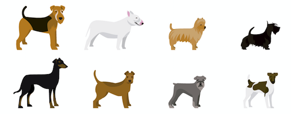
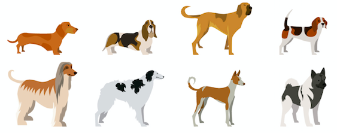
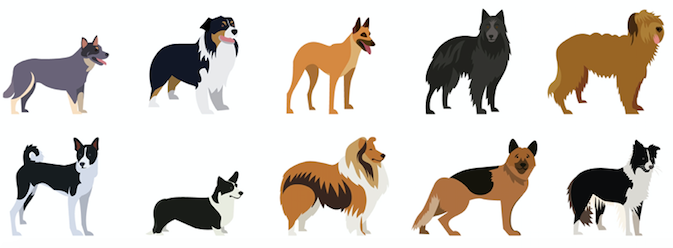
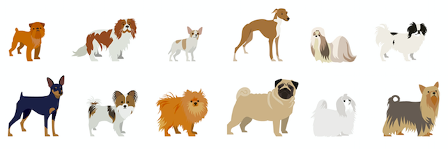

Just because I can't imagine taking a care of dog in a six-floor walk-up in Manhattan doesn't mean superheros don't exist. This page is a lil' exploration in d3 and data about dogs who live in tiny apartments (I'm projecting). Data is from the dog license registration database from the NYC Department of Health and Mental Hygiene and is limited to 2012. Obviously, not all dogs are registered with the city; these graphics are about the ones that are.
Out of 37,156 lady dogs that existed in NYC in 2012, you'd think we'd have moved past Twilight's "Bella" (this was a real thing that happened with human babies) and get a little more creative. This is 2012, though, so we'll let that slide. Hover over each circle to see the top ten lady dog names in NYC; and, because it's cool, I want to point out that "Sophie" rings in at number 15 most common female dog name in NYC. Dog Sophies > Human Sophies.
Keep scrolling! ↓↓
Literally all boy dogs are named Max. And if not, their name likely
has two syllables and ends in a "y." Hover over the dogs to see the top
ten male dog names.
Keep scrolling! ↓↓
I recently learned how to spot a Maltese in the NYC wild -- and that New Yorkers love their tiny pups. Hover over each dog to see the breed and total number of dogs in NYC. Keep scrolling to check out the top 5 most common dog breeds (after mixed breeds) in each borough.
Keep scrolling! ↓↓
Let's swap that Pit Bull for a Lab/Retriever.
Popped in these groomed-out Maltese and Shih Tzus for dramatic effect.
DOGS DOGS DOGS
Same pups, new order.
Ever wondered what the top 10 most common dominant dog colors are in NYC? Hover over the bars below to see how many dogs have mainly that color fur.
Think I can guess your dog? Me neither. But click on your 'hood and I'll tell you the most likely option.

